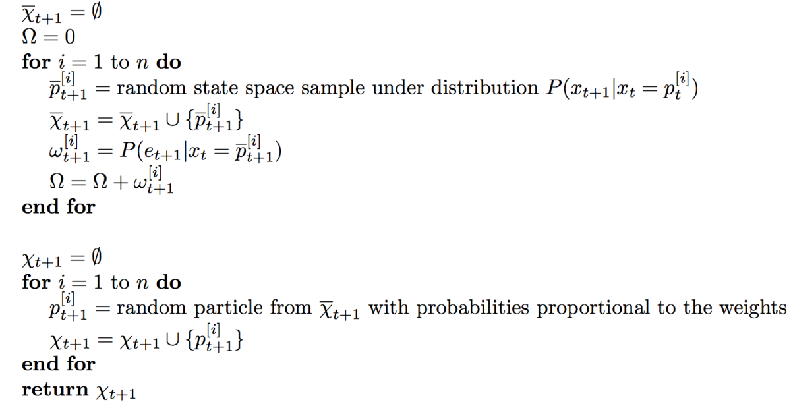
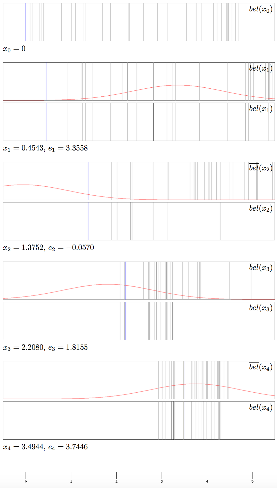

Robot Localization IV: The Particle Filter
This is part 4 in a series of articles explaining methods for robot localization, i.e. determining and tracking a robot's location via noisy sensor measurements. You should start with the first part: Robot Localization I: Recursive Bayesian Estimation
The last filtering algorithm we are going to discuss is the Particle Filter. It is also an instance of the Bayes Filter and in some ways superior to both the Histogram filter and the Kalman Filter. For instance, it is capable of handling continuous state spaces like the Kalman Filter. Unlike the Kalman Filter, however, it is capable of approximately representing deliberate belief distributions, not only normal distributions. It is therefore suitable for non-linear dynamic systems as well.
The Idea
The idea of the Particle Filter is to approximate the belief $bel(x_t)$ as a set of $n$ so-called particles $p_t^{[i]} \in dom(x_t)$: $\chi_t := \{ p_t^{[1]}, p_t^{[2]}, ..., p_t^{[n]} \}$. Each of these particles is a concrete guess of the actual state vector. At each time step the particles are randomly sampled from the state space in such a way that $P(p_t^{[i]} \in \chi_t)$ is proportional to $P(x_t = p_t^{[i]} \, \vert \, e_{1:t})$.
This means that the probability of a particle being included in $\chi_t$ is proportional to the probability of it being the correct representation of the state, given the sensor measurements so far. This way, the update step can be thought of as a process similar to the evolutionary mechanism of natural selection: Strong theories, that are compatible with the new measurement, are likely to live on and reproduce, whereas poor theories are likely to die out. This results in the fact that the particles are likely to be centered around strong theories. We will see a visual example for this later.
The Algorithm

We take the same approach as we did with all the previous Bayes Filters. First, we calculate a particle representation of $\overline{bel}(x_{t+1})$ from $\chi_t$, which we denote $\overline{\chi}_{t+1}$: For each particle $p_t^{[i]} \in \chi_t$, we sample a new particle $\overline{p}_{t+1}^{[i]}$ from the distribution $P(x_{t+1} \, \vert \, x_t = p_t^{[i]})$, which can be obtained from the transition model. We put all these new particle into the set $\overline{\chi}_{t+1}$.
As an example, let’s consider a moving robot in one dimension. The state contains only one variable, the location. From time $t$ to $t + 1$ the robot has moved an expected distance of 1 meter to the right with Gaussian movement noise. In this case we would just add 1 to the locations of all the particles plus a random number that is sampled from the transition model.
Now we calculate the particle representation of $bel(x_{t+1})$, namely $\chi_{t+1}$, from $\overline{\chi}_{t+1}$. The key idea here is to assign a so-called importance weight, denoted $\omega[i]$, to each of the particles in $\overline{\chi}_{t+1}$. This importance weight is a measure of how compatible the particle $\overline{p}_{t+1}^{[i]}$ is with the new measurement $e_{t+1}$. This probability can be obtained from the sensor model. $\chi_{t+1}$ is then constructed by randomly picking $n$ particles from $\overline{p}_{t+1}^{[i]}$ with a probability proportional to their weight. The same particle may be picked multiple times. This procedure is called resampling.
Example
We elucidate the Particle Filter with a localization example that’s similar to the Kalman Filter example, i.e. we use the same transition and sensor models as well as the same position and measurement chains. Since the particles are drawn from the state space, they are simply real numbers. This time, we start with a uniform distribution over the interval $[0, 5]$. In this instance, we use 30 particles. For obvious reasons, a numerical representation of the particle sets at each time step will not be given, but a graphical representation can be seen in the following figure. Each of the black/gray lines represents one or more particles. Since multiple particles can fall on the same pixel, the opacities of the lines are proportional to the number of particles on that pixel. Again, the blue line represents the actual position and the red graph represents $P(x_t \, \vert \, e_t)$.

Conclusion
In this series of articles, we have introduced the Bayes Filter as a means to maintain a belief about the state of a system over time and periodically update it according to how the state evolves and which observations are made. We came across the problem that, for a continuous state space, the belief could generally not be represented in a computationally tractable way. We saw three solutions to this problem, all of which have their advantages and disadvantages.
The first solution, the Histogram Filter, solves the problem by slicing the state space into a finite amount of bins and representing the belief as a discrete probability distribution over these bins. This allows us to approximately represent arbitrary probability distributions.
The second solution, the Kalman Filter, assumes the transition and sensor mod- els to be linear Gaussians and the initial belief to be Gaussian, which makes it inapplicable for non-linear dynamic systems - at least in its original form. As we showed, this assumption results in the fact that the belief distribution is always a Gaussian and can thus be represented by a mean and a variance only, which is very memory efficient.
The last solution, the Particle Filter, solves the problem by representing the belief as a finite set of guesses at the state, which are approximately distributed according to the actual belief distribution and are therefore a good representation for it. Like the Histogram Filter, it is able to represent arbitrary belief distributions, with the difference that the state space is not binned and therefore the approximation is more accurate.
References
[NORVIG] Peter Norvig, Stuart Russel (2010) Artificial Intelligence - A Modern Approach. 3rd edition, Prentice Hall International
[THRUN] Sebastian Thrun, Wolfram Burgard, Dieter Fox (2005) Probabilistic Robotics
[NEGENBORN] Rudy Negenborn (2003) Robot Localization and Kalman Filters
[DEGROOT] Morris DeGroot, Mark Schervish (2012) Probability and Statistics. 4th edition, Addison-Wesley
[BESSIERE] Pierre Bessire, Christian Laugier, Roland Siegwart (2008) Probabilistic Reasoning and Decision Making in Sensory-Motor Systems